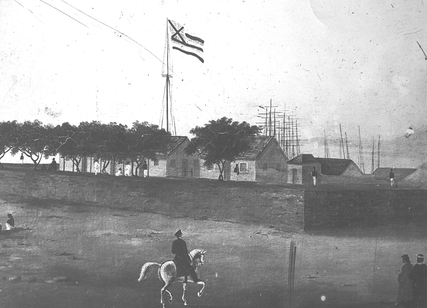
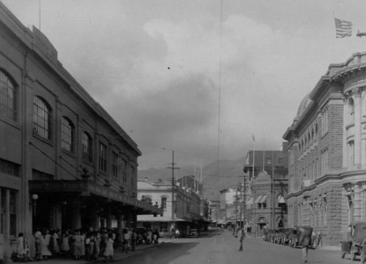

Fort Street Mall's origins date back to the early 1800s, when Kamehameha the Great took control of a fort built by Russian fur traders after uncovering plans to take over the Kingdom of Hawaiʻi. Governor John Adams Kuakini expanded it into the largest structure in the islands, naming it Fort Kekuanohu, meaning "thorny back." When the fort was demolished in 1857, coral blocks from the building were used to extend the shoreline, which can still be seen during low tide from Pier 12.
Photo credit: Hawaiʻi State Archives Digital Collection

In 1881, the first paved road was constructed in the same area, receiving the name Fort Street after Fort Kekuanohu. Today's current Fort Street Mall was created in 1968 by the Downtown Improvement Association in place of the old Fort Street in an effort to bring more business and traffic to downtown.
Photo credit: Hawaiʻi State Archives Digital Collection